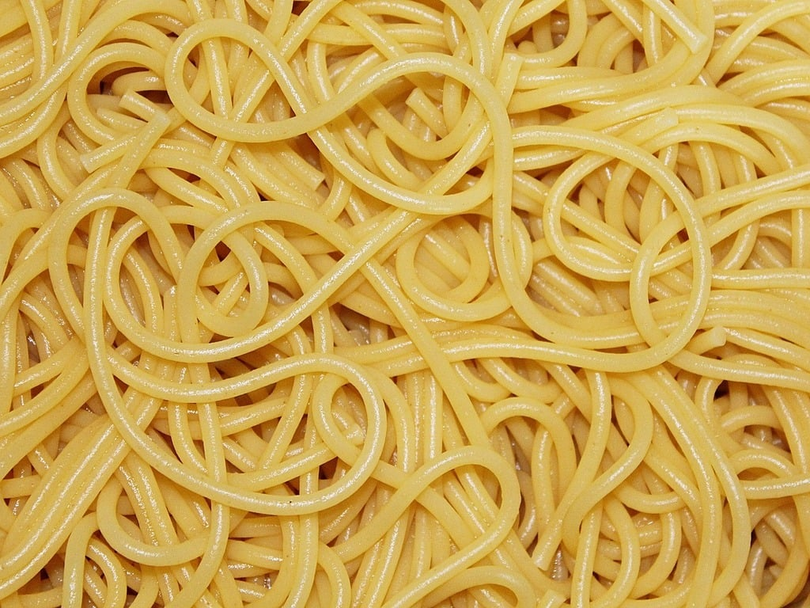

Spaghetti

Description
A very simple spaghetti recipe for when you're feeling lazy.
Spaghetti cooked in salt and then served with butter
Ingredients
- 1/2 tablespoon butter
- 2 ounces of dry spaghetti noodles
- 1 cup of water
- pinch of salt
Steps
- boil 1 cup of water on high heat
- add a pinch of salt
- add spaghetti
- lower temperature medium heat
- cook until the spaghetti is at the consistency you prefer
- drain water from pasta
- serve and add a 1/2 tablespoon of butter